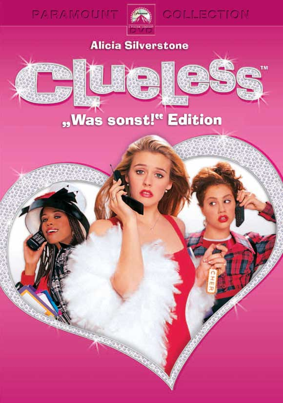
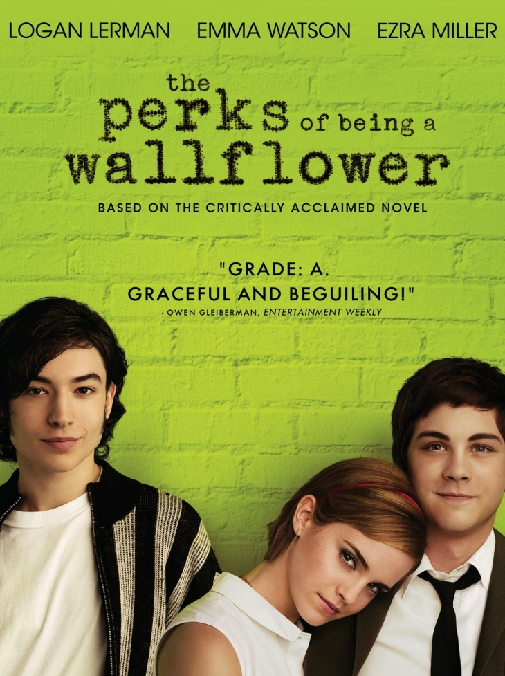
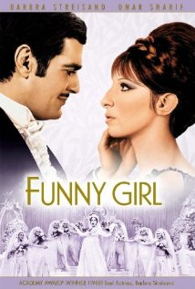
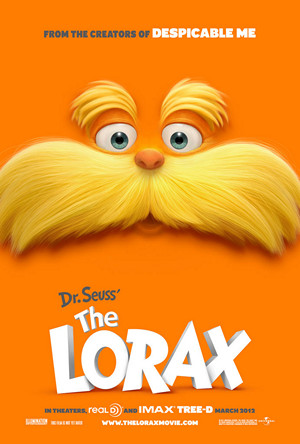

|  |  |  |  |
I don't generally watch movies, but if I had to choose my favorites of the ones that I have seen they'd probably be Clueless because it's my absolute favorite movie I could see it a million times and I'd still love it. Next would be Perks of Being a Wallflower because I read the book and it was absolutely amazing and the seeing the movie it's just amazing because you can actually see the characters that I loved when reading the story. Next would be Funny Girl because my mom first showed me Barbra Streisand when I was about 7 years old, and I absolutely fell in love with her and her voice, and my favorite movie of hers by far was Funny Girl.